ทิศทางภาพของ diagram — 3 แนวเทียบกับของเดิม
รูปทั้งหมดใน docs/plugins/ · ทำตาม ui-craft ข้อ 0.1 · ผู้ตรวจ 2 ตัวที่ไม่ได้ทำงานนี้ให้คะแนนแยกกัน แล้วใช้คะแนนที่ต่ำกว่า · ผ่านเมื่อทุกแกน ≥ 4 · 2026-10-13
คะแนนด่านสวย รอบเลือกแนว
| แนว | ความประทับใจแรก | รูปพระเอก | ตัวตน | ความประณีต | เทียบของเดิม | ผล |
|---|---|---|---|---|---|---|
| A · สว่าง เรียบ ยกระดับของเดิม | 3 | 2 | 3 | 3 | 3 | ไม่ผ่าน |
| B · พื้นมืด เส้นเรือง | 4 | 3 | 3 | 3 | 3 | ไม่ผ่าน |
| C · infographic แถบสีประจำ plugin | 4 | 4 | 5 | 3 | 4 | ไม่ผ่านแค่ความประณีต → เลือก แล้วแก้ต่อ |
| C แก้รอบ 1 | 4 | 3 | 4 | 2 | 4 | ไม่ผ่าน |
| C แก้รอบ 2 | 3 | 3 | 4 | 2 | 4 | ไม่ผ่าน |
| C แก้รอบ 3 (ใช้อยู่ใน docs/plugins/) | 3 | 3 | 4 | 3 | 4 | ไม่ผ่าน · ครบเพดาน 3 รอบ |
ที่ยังไม่ผ่าน หลังรอบ 3
- รูปภาพรวม: เส้นส่งงาน 34 เส้นในวงกลมยังพันกัน ไล่ทีละเส้นไม่ได้ (ตาราง "ใครส่งงานให้ใคร" ข้างใต้อ่านได้)
- ชื่อ skill ในชิปบางตัวขึ้นบรรทัดใหม่ตรงขีด · คำไทยบางคำเหลือคำเดียวท้ายบรรทัด · ขนาดตัวอักษรในรูปภาพรวมเกิน 5 ขนาด
- รูป flow ของ superuser-* ยังเป็นโครงเดิมเปลี่ยนแค่สี และยาวเกิน 10,000 px
ตามกฎด่านสวย ครบ 3 รอบแล้วไม่ผ่าน → ขั้นต่อไปคือเลือกทิศทางภาพใหม่ ไม่แก้ทีละจุดต่อ · รายละเอียดทุกรอบอยู่ใน _to_delete/directions/*review*.md
รูปพระเอก: ภาพรวม marketplace
ของเดิม
การ์ดขาว สีเดียว
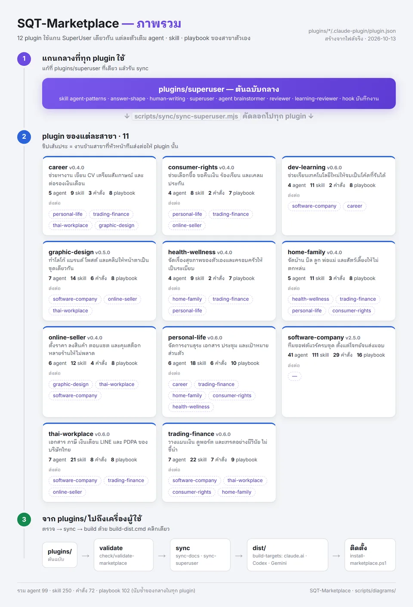
A · สว่าง เรียบ
ข้อดี: อ่านง่าย · ข้อเสีย: ไม่มีอะไรดึงสายตา แกนกลางไม่ต่อกับ plugin
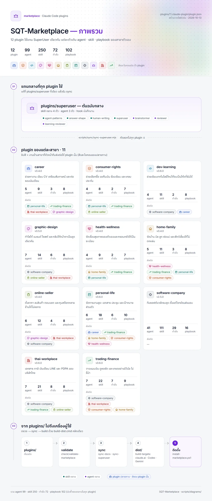
B · พื้นมืด
ข้อดี: แกนกลางเรืองจำง่าย · ข้อเสีย: บน GitHub โหมดสว่างดูเหมือนภาพหน้าจอโหมดมืด สีบางคู่แยกยาก
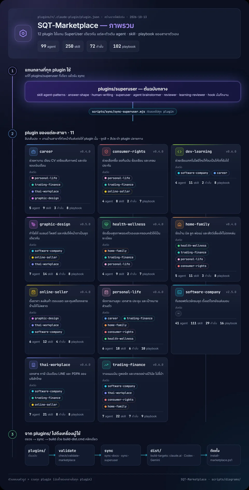
C · infographic (เลือก)
ข้อดี: ปิดชื่อแล้วยังรู้ว่าการ์ดไหน plugin ไหน · ข้อเสีย: ตัวเลขใหญ่แย่งหัวรูป (แก้แล้ว)
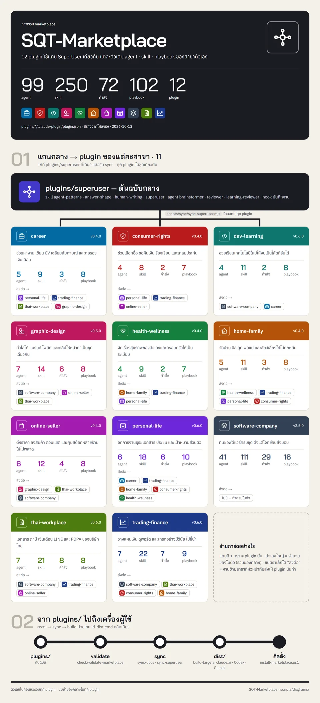
ขั้นตอนของ playbook (career)
ของเดิม
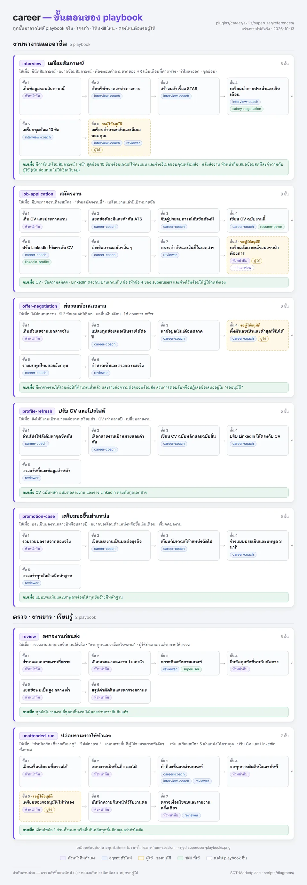
A
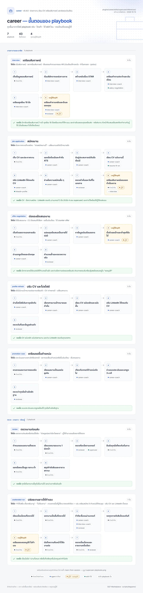
B
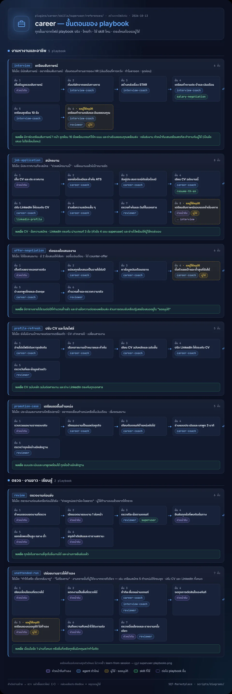
C (เลือก)
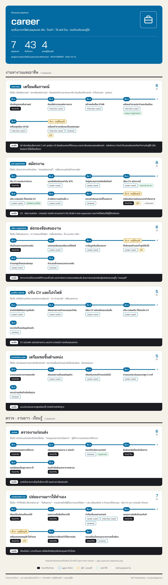
วิธีทำงานของ SuperUser (career)
ของเดิม
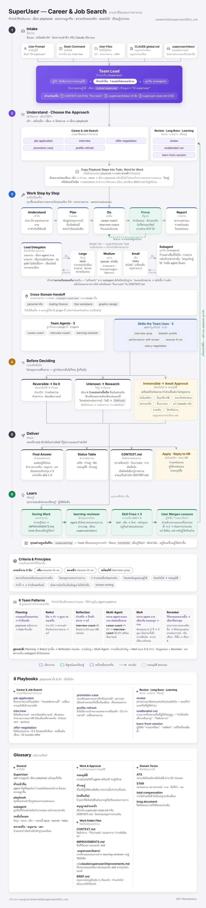
A
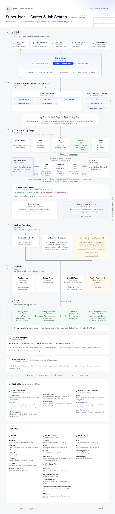
B
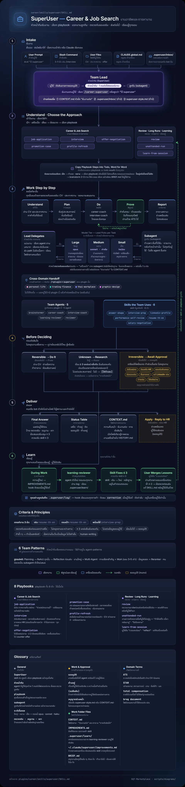
C (เลือก)
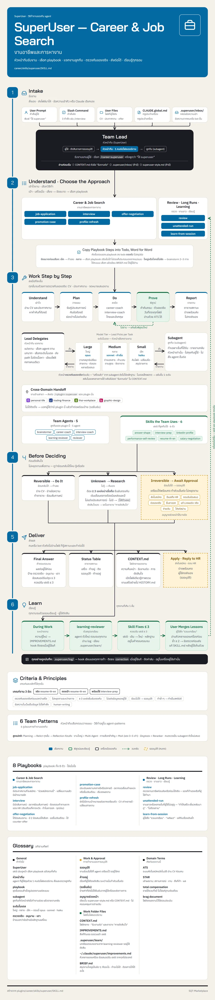